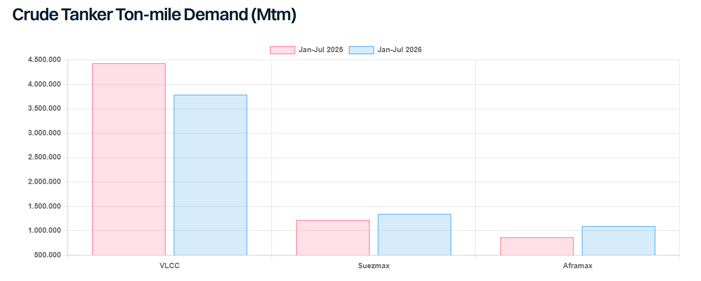

The crude vessel segments have crossed wakes this year — moving in different directions even as they share the same waters. Crude ton-miles softened overall in 2026 to date, though Suezmaxes and Aframaxes picked up share even as VLCCs came under pressure.
VLCC ton-miles fell 14.5% year-on-year over January-July, driven primarily by a sharp decline in Middle Eastern crude export volumes. Lower VLCC utilisation on WAF routes added further drag, as continued weak Chinese buying removed a key long-haul outlet even as WAF cargoes increasingly redirected toward Europe/Med instead. Long-haul USGC-Far East demand partly offset the decline, peaking in May before retreating to near pre-war levels as dwindling SPR inventories and high US refinery utilisation left less crude for export. The Yanbu-East detour, though theoretically ton-mile accretive, has so far seen only scarce fixtures, limiting its offsetting effect.
Actual VLCC ton-miles are likely marginally higher than reported, as dark activity in the Middle East keeps some running unaccounted for in the data. That gap also helps explain why VLCC earnings have remained elevated even as recorded ton-miles fell: with more VLCCs tied up in Middle East STS workarounds and slow steaming, the effective fleet has stayed tighter than the headline ton-mile trend suggests. VLCC earnings now are rangebound at $170,000-200,000k/day. The strong freight rate has, in turn, prompted charterers to pivot toward splitting cargoes onto Suezmaxes where possible, adding to ton-mile gains this year.
Suezmax ton-miles rose 10% over first seven months of this year as the Atlantic basin leant more heavily on the segment across the board. WAF exports utilised more Suezmaxes as more cargoes moved to Europe/Med. Russian crude exports from the West also rose sharply — more crude has been freed up after Ukrainian strikes on refineries, and more volume heading to India — with Suezmax covering most of the increase and the longer India run adding ton-miles. A recent uptick in Sidi Kerir loadings gave Suezmax a further boost as the Red Sea crisis pushed more Saudi barrels to Atlantic refiners, though that’s a shorter run. CPC loadings, however, dipped from their May peak as Black Sea risk hit port ops, before recovering once Ukraine pledged not to target vessels loading there.
Aframax ton-miles rose almost 27% on broader activity across the Atlantic basin. USGC activity firmed via reverse lightering and transatlantic flows to UKC/Med, holding up even as the broader USGC market pulled back. Steady Venezuelan crude flows since the US eased sanctions on the sector in early 2026 also supported mainstream Aframax demand. High TMX export volumes and Aframax’s competitiveness on the eastwards shipments remained steady ton-mile contributors. Aframax utilisation for Russian barrels stayed largely flat despite the rise in export volumes. Despite this sizeable ton-mile increase, TCEs have retreated since April, now hovering around low-$30,000/day and low-$80,000/day for TD14) and TD25 respectively, as continued LR2 dirtying-up kept tonnage loose.
Looking ahead, each crude vessel segment carries a distinct vulnerability, though one common thread runs across all segments: the ongoing pullback in USGC export volumes, which has already faded from May’s peak as SPR inventories draw down and refiners keep utilisation elevated, leaving progressively less crude available for export as the year goes on. This affects both Aframaxes and VLCCs directly — Aframaxes given its heavy reliance on USGC-Atlantic flows, a risk compounded by continued LR2 dirtying-up which keeps adding competing tonnage even as underlying demand softens; and VLCCs, since USGC-Far East volumes have been one of the few factors keeping VLCC ton-miles from collapsing further, meaning any additional decline here will remove one of the segment’s key support factor.
VLCC ton-miles, meanwhile, remain most exposed to Chinese import demand, since China’s imports have stayed well below pre-war levels for most of the year, leaving it the one major buyer with real room to add barrels and boost long-haul demand at scale; this added demand could tighten tonnage supply further — a pool with some tonnage already tied up in Middle East Gulf for STS workarounds — supporting current earnings levels. Middle East developments will determine the scale of that lift: continued disruption would force China further afield for replacement barrels and add long-haul ton-miles, while a resolution would let it revert to shorter-haul Gulf crude, still adding demand but with a smaller ton-mile uplift. Suezmax risk sits mainly in the Black Sea and Europe. CPC exports remain exposed to a risk of further attacks. European autumn maintenance usually cuts crude intake and would normally weigh on Suezmax pull, but strong margins and tight supply this year could see refiners trim or delay turnarounds, keeping intake firmer than the seasonal pattern suggests.

Data source:Gibson Shipbrokers